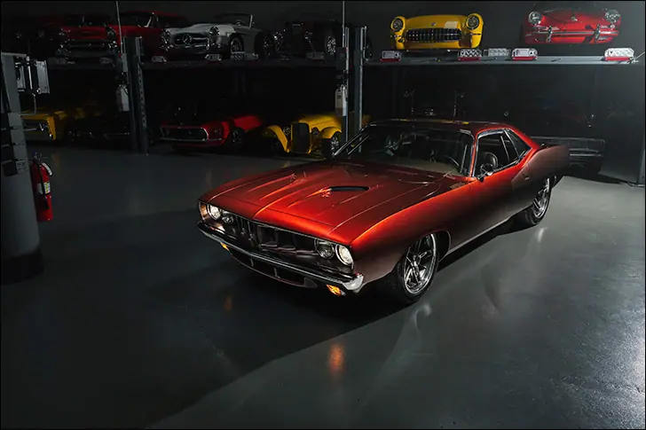
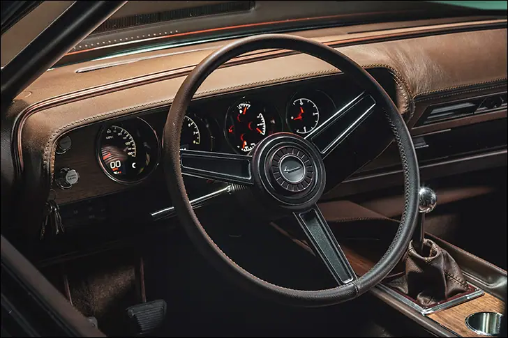
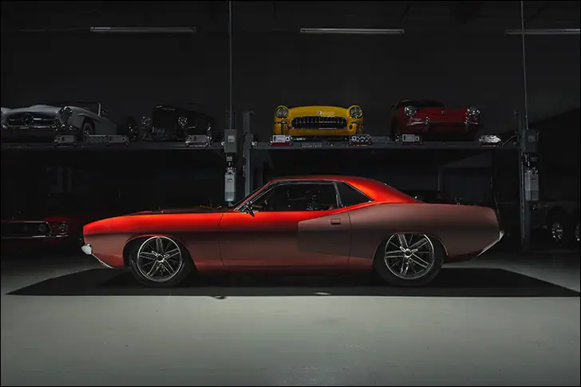
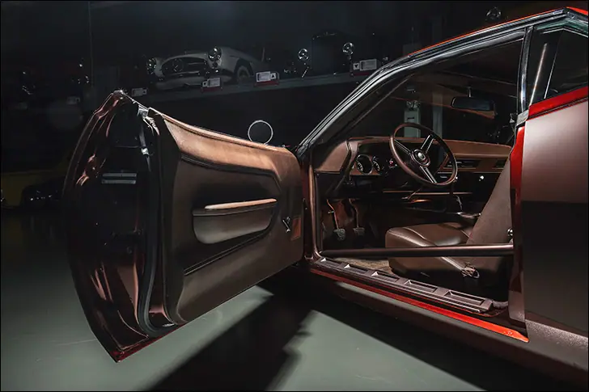
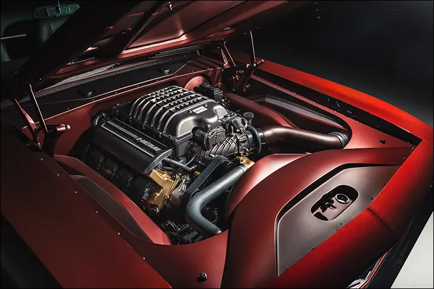
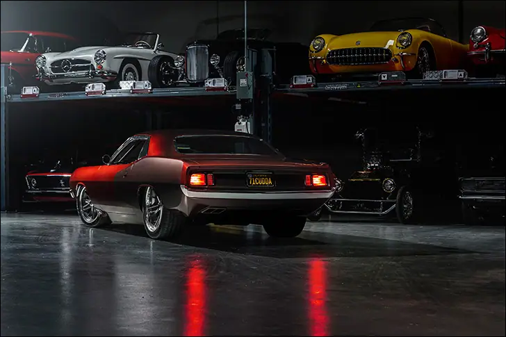

Rusty Red


Rusty Red
Reno Nevada 2015, Andy Leach from CAL Auto Creations in Bennington Nebraska is competing in the Barrett-Jackson Cup with an incredible 1962 Chevy Bubble Top. Chevy purists, my father included, probably have a few choice words for those that modify the highly sought after “bubble”, long story short, this worked out just fine for Andy in the long run. Andy had already won the crown jewel Ridler award with a 40 Ford before this, so being in the running for ANOTHER award is just a day in the life of CAL Auto’s founder. One of the top 25 contenders in Reno is a mean 66 Chevelle Pro Street owned by Kent Mantranga from southern California. Andy takes the win in the Reno Cup and forms a new friendship with Kent in the process. A year later that 62 Chevy went back to Barrett-Jackson and across the auction block. The winning bidder, none other than Kent.

Fast forward to present day, a 1971 Plymouth ‘Cuda, originally a 426 car, (cue the Mopar purists that are now upset) with just a few upgrades. Car was built twice basically. Assembled in bare steel, driven around 1,000 miles to see what falls off, multiple burnouts, road trips and then it was torn completely apart and prepped for paint. Paint was sprayed by Charley Hutton Color Studio who got his feet wet with the legendary Boyd Coddington back in the day. You won’t find this color in any paint fan deck or at your local body shop supply store, Rusty Red is the custom color Andy and Kent came up with.

Tracy Weaver with the Recovery Room took care of the cockpit of this 707 hp machine. Custom buckets wrapped in leather, a pseudo stock looking dash with solid walnut surrounding the Dakota Digital HDX gauges, no glued-on wood veneer here. CAL auto shifter with Hurst linkage for the Bowler T56 transmission that bangs through the gears back to the 3.73 Dana 60 rear end. Massive 14-inch Baer Brakes rotors with 6 piston calipers to slow this fish down.

So, what do you do with a Rusty Red 71 ‘Cuda? You drive it, Kent will go through tires like people go through Lysol wipes in a pandemic. This car will get driven to shows, more burn outs will happen, road course races will take place, Andy will touch up the paint and it’ll look incredible its entire life. Awards come and go, but the bonds you build with hobbyists and friends in the industry is what keeps this going. I’ve heard there is another project in the works.

Also on dakotadigital.com.